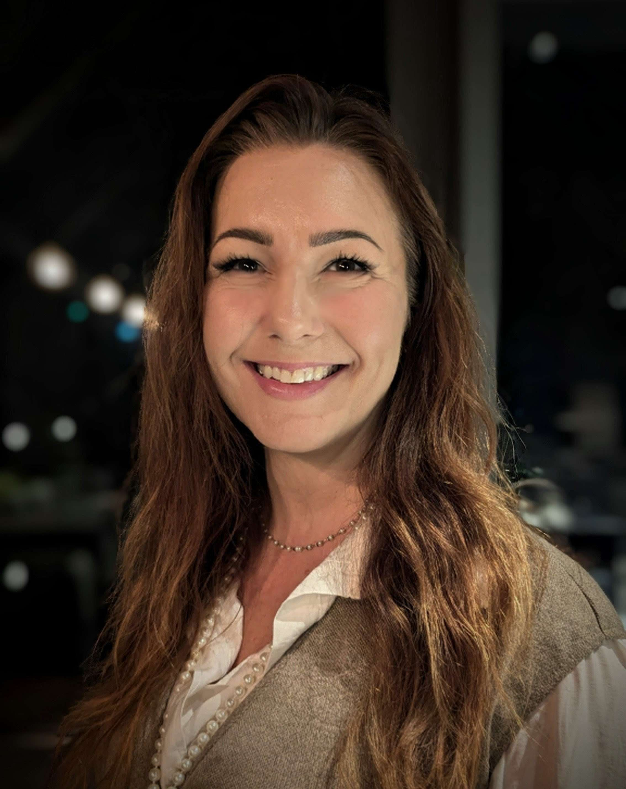
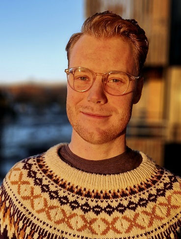
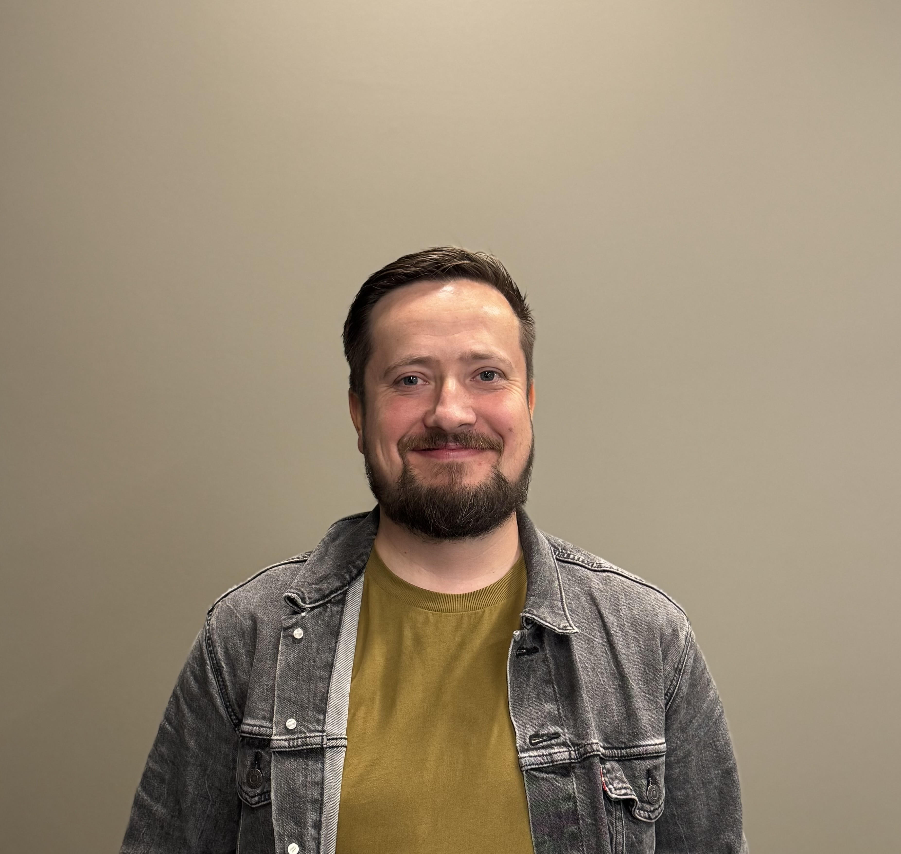
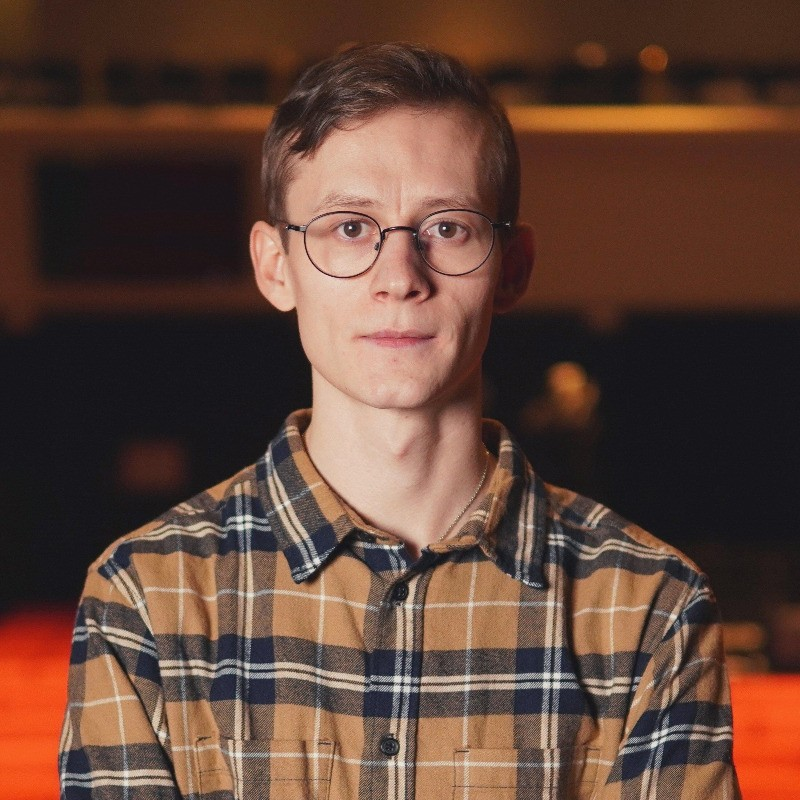
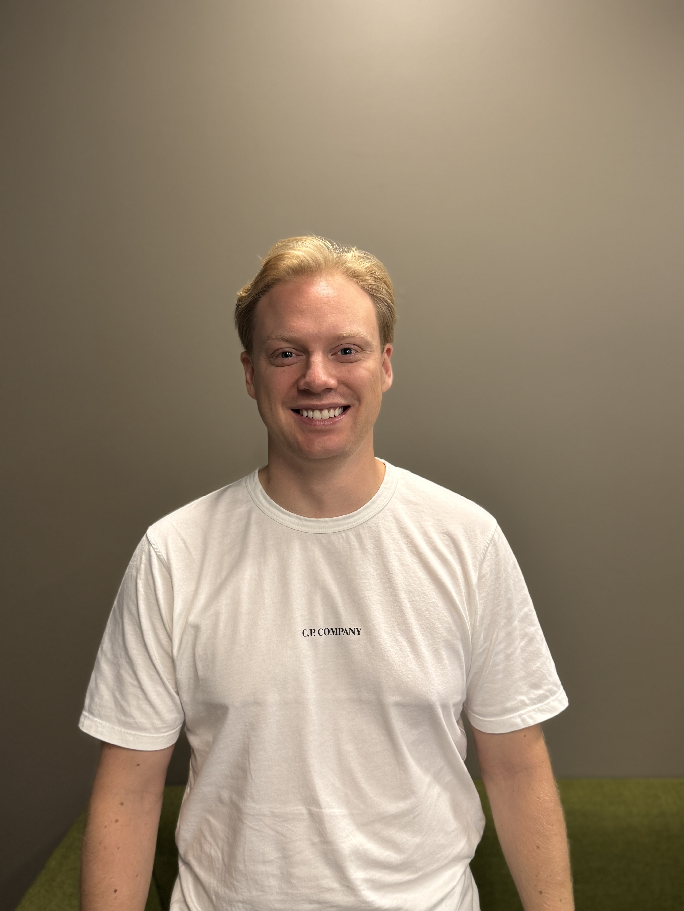
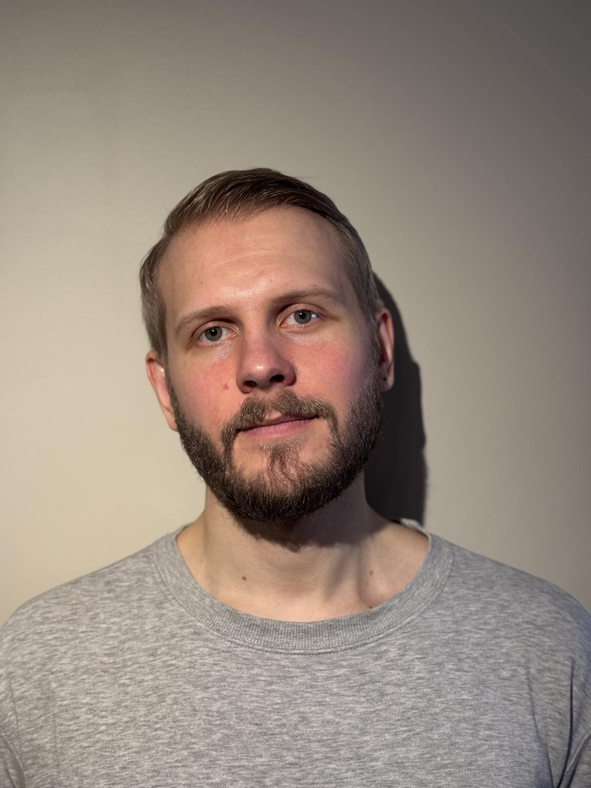

Lene Olsen
Kan fylle roller som:
Prosjektleder
UI/UX-designer
Databaseutvikler
Startet karrieren som grafisk designer som 19-åring, og har siden opparbeidet meg bred erfaring gjennom ulike yrker og ansvarsområder. Jeg er en engasjert problemløser med sans for detaljer og trives best når jeg kan kombinere struktur og kreativitet – enten det er å analysere datasett, utvikle brukervennlige grensesnitt eller finne gode måter å løse en utfordring på.
Prosjektledelse
Scrum
Database
GIS
C#
UX/UI
Behovsanalyse
Universell utforming
JavaScript

Kristian Nielsen
Kan fylle roller som:
Backend-utvikler
Programvarearkitekt
Systemutvikler
Hei! Jeg er gjør arbeid innen backend og programmering for gruppen.
Jeg er 29 år og har tidligere bachelor i musikkproduksjon og har tidligere jobbet med festivalsikkerhet.
Nå studerer jeg 3. året på IT og informasjonssystemer ved UiA, hvor jeg også er i praksis hos Kartverket.
C#
Database
Webutvikling
Python

Ivar Kaldheim
Kan fylle roller som:
Prosjektleder
Dataanalytiker
Produktdesigner
Jeg er 33 år, og har studert biologi tidligere. Har erfaring fra mange ulike roller og arbeidsoppgaver
innen oppdrett. I gruppen arbeider jeg både med frontend og backend utvikling. Nå går jeg 3. året på IT og informasjonssystemer.
C#
Python
QGIS
Webutvikling

Martin Stomnås
Kan fylle roller som:
Produkteier
Idéutvikler
UX-designer
Jeg er 27 år gammel og kommer fra Vennesla. Nå tar jeg en bachelor i IT og informasjonssystemer ved UIA,
og har praksis hos Kartverket.
Webutvikling
C#
Java
Python
Scrum

Terje Vo Sandvold
Kan fylle roller som:
Fullstack-utvikler
Produktdesigner
QA-ansvarlig
Hei! Jeg er 29 år gammel, fra Trondheim og tar en bachelor innen IT og informasjonssystemer
ved Universitetet i Agder. God UX og UI er noe som engasjerer meg da jeg er en veldig detalj-orientert person.
Tidligere erfaring fra byggebransjen, noe som lærte meg å følge faste planer og rutiner, samt å være tilpasningsdyktig
i møte med kunder.
HTML
CSS
C#
Java
Python
Scrum

Ørjan Fidje
Kan fylle roller som:
Fullstack-utvikler
Produktdesigner
Systemarkitekt
Jeg er 30 år gammel. Jeg har bachelorgrad i lyddesign for film og TV i fra tidligere studier.
Herfra har jeg mye erfaring med produksjonsarbeid i team. Jeg ser på meg selv som kreativ,
og ønsker å kombinere kreativiteten med IT, derfor tar jeg nå en bachelor i IT og informasjonssystemer ved UiA.
HTML
CSS
JavaScript
C#
Java
Python
C++